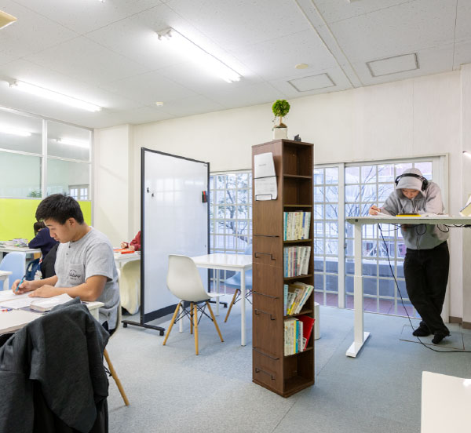

株式会社パラリア
塾を、自分たちで
やってきました。
2016年に自習専門の塾を創業し、10年運営しました。いまはオンライン指導と、塾の運営支援をしています。
生徒募集も、保護者対応も、講師の育成も、閉校の判断も、当事者としてやりました。代表はいまも現場で生徒を見ています。
パラリアとは
ABOUT
塾は教わる場じゃない。
向き合う場だ。
自習専門の塾を10年運営し、その現場で分かったことを、
いま同じ仕事をしている塾へ渡している会社です。
塾は、ただ教える場所ではありません。
生徒が自分自身と向き合い、未来を切り拓く力を育てる場所です。
私たちはその価値を、言葉ではなく結果で示したいと考えています。
だから、自分たちの塾で先に試したことしか外には出しません。
他の塾がうまくいくことも、自分たちの成果だと考えています。
やったかどうかではなく、何が変わったかで判断します。
やってきたこと
TRACK RECORD

主な合格実績：東京大学／北海道大学／東北大学／名古屋大学／九州大学／筑波大学／
早稲田大学／慶應義塾大学／上智大学／明治大学／青山学院大学／立教大学 ほか
代表紹介
現場と研究をつなぐ教育実践者

代表取締役 浅見 貴則
「人は環境によって変わる」
この考えを原点に、15年以上にわたり学習支援の現場に立ち続けています。
集団塾・個別指導塾・映像授業・家庭教師と、ひととおりの形態を経験したうえで2016年にパラリアを創業。現在も生徒指導を行いながら、東京科学大学大学院（経営工学）で学習空間の研究を続けています。
現場で感じた課題を研究で深め、研究で得た知見を現場へ還元する。その循環を通じて、生徒と塾の可能性を広げることを目指しています。